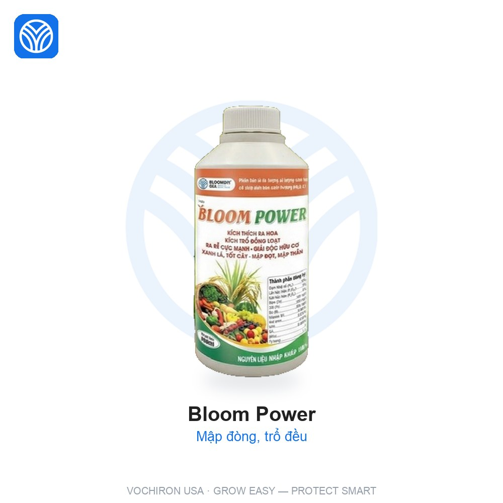
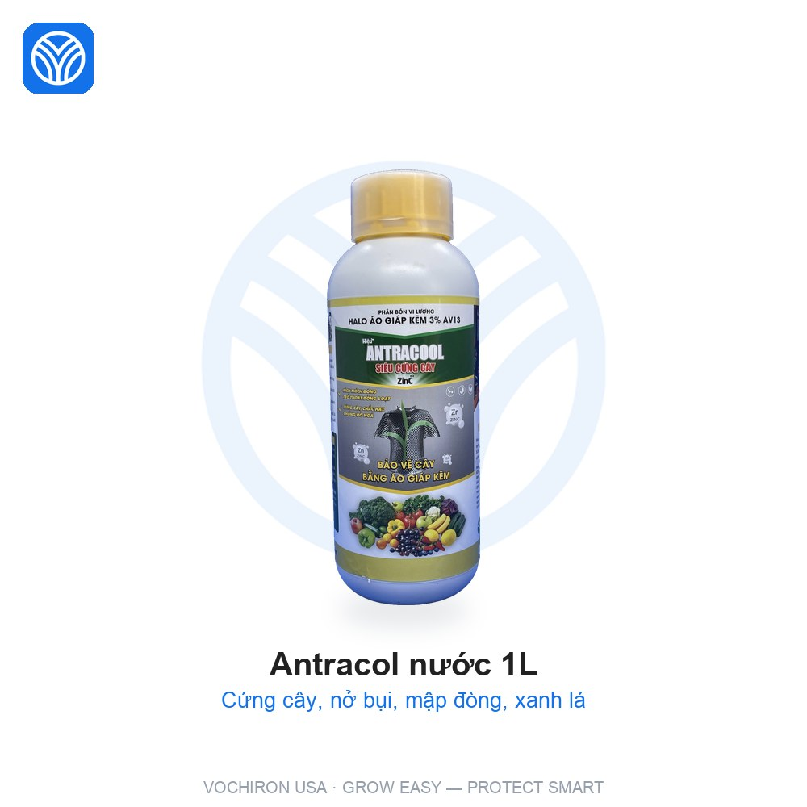
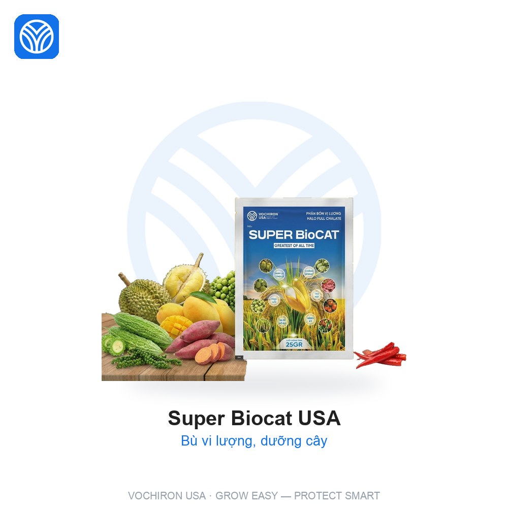

📚 Cẩm nang cây lúa › Làm đòng
G3 · Làm đòng · 41 → 60 NSSĐòng nhỏ, trổ không đều trên lúa giai đoạn làm đòng: nhận biết & phác đồ xử lý
Đội ngũ kỹ thuật VTNN Lê Nguyễn 2 — VOCHIRON USA
Cập nhật 05/09/2026 · Dựa trên phác đồ 6 giai đoạn & kinh nghiệm bán hàng cho 208 hộ
⏰ Thời điểm cần canh chừng
Giai đoạn Làm đòng (41 → 60 NSS — NSS: ngày sau sạ). (ưu tiên)
📌 Ghi chú kỹ thuật giai đoạn: 40–45 NSS đón đòng và hãm lóng cùng lúc; Antracol nước ở mốc 40 NSS lo cả cứng cây, nở bụi, mập đòng. 50–55 NSS phòng khô vằn, đạo ôn, bạc lá.
💊 Phác đồ — thuốc xử lý đòng nhỏ, trổ không đều

Bloom PowerNPK 12-3-3 + Zn, Fe, Bo + GA3, NAA, B1, amino acid
Liều: 2 chai/ha

Antracol nước 1LZn 30.000ppm + Bo + Mg
Liều: 1 chai/ha

Super Biocat USAVi lượng chelate Zn, Fe, Mn, Cu, Bo
Liều: 10 gói/ha
🌾 Kinh nghiệm thực chiến
Kinh nghiệm với Bloom Power“Muốn đòng to, trổ đều một loạt, bông dài hạt chắc thì đón đòng bằng Bloom Power.”
Kinh nghiệm với Antracol nước 1L“Xịt đúng mốc 40 ngày: cây cứng, bụi nở, đòng mập, một chai lo ba việc.”
⚠️ Lưu ý bắt buộc
• Luân phiên nhóm cơ chế — không dùng cùng một nhóm quá 2 lần liên tiếp trong vụ để tránh kháng thuốc.
• Phun đúng liều theo nhãn, không tự tăng liều "cho chắc".
• Không phun lúc lúa phơi màu (9–14h). Tuân thủ thời gian cách ly trước thu hoạch.